计算机系统
大作业
题 目 程序人生-Hello’s P2P
专 业 人工智能
学 号 1173301021
学 生 李浩林
指 导 教 师 史先俊
计算机科学与技术学院
2020年3月
通过阐述分析给定的hello.c的整个生命周期，探究从生命周期的初期---源代码，到显示在屏幕上整个阶段，这是硬软件的共同努力，作为软件，操作系统也有参与进去。内容主要涉及编译，内存管理，进程，I/O。作为计算机系统这门课的概括性总结。
关键词：操作系统；编译；内存管理；
目 录
6.2 简述壳Shell-bash的作用与处理流程 - 10 -
7.2 Intel逻辑地址到线性地址的变换-段式管理 - 11 -
7.3 Hello的线性地址到物理地址的变换-页式管理 - 11 -
7.4 TLB与四级页表支持下的VA到PA的变换 - 11 -
7.7 hello进程execve时的内存映射 - 11 -
你造吗？在壳(Bash)里，伟大的OS（进程管理）为我fork（Process）,为我execve,为我mmap，分我时间片，让我得以在Hardware(CPU/RAM/IO)上驰骋（取指译码执行/流水线等）；
感谢 OS！感谢 Bash！在我完美谢幕后为我收尸。 我赤条条来去无牵挂！
我朝 CS（计算机系统-Editor+Cpp+Compiler+AS+LD + OS + CPU/RAM/IO等）挥一挥手，不带走一片云彩！ 想想俺也是 O2O: From Zero-0 to Zero-0。
“hello，world”，在初学编程的时候，你是不是也最早实现的是这一代码呢？虽然代码看起来十分简单，但其实整个过程十分的复杂，在没学习相关知识的时候，我们从抽象度最高的应用程序员角度去看待问题，printf就是实现打印内容到屏幕的一个函数，只要打开这个文件，就可以实现我们设计好的功能了，“hello，world”这一句话就这么显示在我们眼前的屏幕之中，这对于初学者是足够的，但是当我们慢慢深入学习之后，就会发现要是我们能了解从写出代码到显示在屏幕上这一过程发生的事情，那我们就可以做到减少代码中的bug，并且能了解在调试出现问题的时候，该怎么做，直到为什么这么做，还能优化程序的效率等等。
当我们用输入设备--键盘，一个个字符的敲入我们的文本编辑器，保存到.c结尾的文件里，我们就已经实现了源代码，而下一步就是预处理，预处理主要是将头文件展开，还有宏替换等等，并且我们写的注释，在这一步就会被删除掉；接下来是编译器发挥作用，也就是将C语言代码转变为汇编语言代码，接下来是汇编器，链接器，经过这两步骤，我们就足以得到已经重定位的目标文件，也就是一个完整的程序啦，
那么程序是什么呢？怎么才能运行我们得到的这个程序呢，这里我们可以通过shell，或者是bash，在shell里，我们输入命令./hello，也就是我们告诉shell，我们想要运行当前路径下的子文件hello，而shell需要做的呢，是调用fork，execve系统调用，创建一个子进程，将CPU的控制传递给这一新进程，并分配时间片。
在新进程里，还有对于各种函数的调用，程序产生的只是虚拟地址，而对于CPU，它能接受的是物理地址，这一转变阶段，有TLB、4级页表参与，最终得到的物理内存地址，假如需要从内存取内容，则需要多级高速缓存的参与。再软硬件的结合下，显卡I/O共同合作，屏幕中出现了短短的“hello，world”。
但程序实现了它的功能并不是过程的结束，控制转移到它的父进程，因为还需要对其进行内存的回收，避免可怜的helloworld成为僵尸进程。
i5 cpu
win7 +VM +ubuntu19+strace+gdb+gcc+objdump
hello.c :C source code that must be preprocessed.
hello.i: C source code that should not be preprocessed.
hello.s: Assembler code.
hello: An object file to be fed straight into linking. Any file name with no recognized suffix is treated this way.
hello.out:已重定向的可执行ELF文件
只是个开始，更推荐读CSAPP第一章里的内容，其实已经包含进去了。
预处理是指在C语言编译器的开始阶段，由C preprocessor(cpp)提供的宏展开、行控制、条件编译以及包含指定头文件。
当用GCC进行编译时，发挥作用的则是GNU cpp，cpp允许宏定义，简短来说就是复杂语句的缩写简写。
作用：
#define 标识符 记号序列
预处理器把该标识符后续出现的各个实例用给定的记号序列替换。
#include "文件名"
先从源文件的位置开始搜索指定的文件，若没找到，则按照下面的方法。
#include< >
预处理器把该行替换为指定的文件，在某些特定的位置进行查找，具体实现不同，例子可见2.2图1。
还有一些复杂的条件编译# if，# ifdef，行连接，行控制，错误信息生成功能，具体可参考引用[1]，引用[2]。
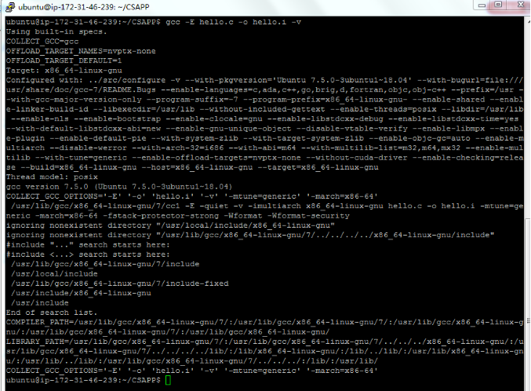
图1- gcc -E hello.c -o hello.i -v繁琐模式的预处理结果
#include "..." search starts here:
#include <...> search starts here:
/usr/lib/gcc/x86_64-linux-gnu/7/include
/usr/local/include
/usr/lib/gcc/x86_64-linux-gnu/7/include-fixed
/usr/include/x86_64-linux-gnu
/usr/include
End of search list.
这一串命令，展示了默认的include <...>搜索替换文件的位置
首先，在hello.i文件，能看到
#include <stdio.h>
#include <unistd.h>
#include <stdlib.h>
这三句被宏展开为对应的头文件stdio.h，unistd.h，stdlib.h的内容
其次，hello.c开头的注释在预处理阶段被替换为一个空白符，
最后，代码部分的空白字符被替换为单个的空格
预处理是不太常出bug的地方，需要的头文件该包括的要包括，因为接下来的编译器，需要用到这些结构声明，定义，别名，宏展开等等。
有的时候，例如sched_setaffinity，给线程绑定cpu，这个的时候就要注意
以下两条代码是有顺序的，因为前一句是特性测试宏feature_test_macros，必须在所有头文件之前包括。
#define _GNU_SOURCE /* See feature_test_macros(7) */
#include <sched.h>
此处的编译是指从 .i 到 .s 即预处理后的文件到生成汇编语言程序
编译有两种，一是从预处理后的.i文件生成.s汇编语言文件，二是指gcc编译c语言代码成为可执行已重定向文件。
总之，在编译这一阶段，根据具体处理器的架构，生成对应的可识别的汇编语言代码。
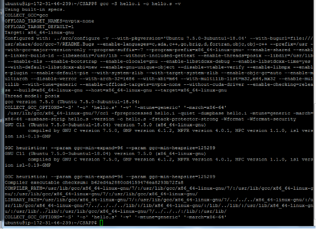
图2- gcc -S helloworld.i -o hello.s -v繁琐模式的结果
a. "用法: Hello 学号 姓名 秒数！\n"
这是一个字符串常量，出现在汇编语言代码里，显示在.string
而里面的中文经过ccl处理，编码成
b. "Hello %s %s\n"————字符串常量，格式串
同上。
c. int i；————局部变量
非静态的局部变量，由用户栈进行管理，在这里能看出来，假如后续没有 对这个变量i操作，那么事实上，后续的汇编代码，甚至都不会反映出来 C代码里有过声明这一局部变量，因为int i;这一句只有声明没有初始化。
根据后边的for循环初始化语句i=0;对应的汇编代码
movl $0, -4(%rbp)，可以看出，栈在-4(%rbp)给局部变量i分配了空间，movl 反映出，分配的空间是4字节。
3.3.2 赋值 =
只有i=0;见3.3.1.c处的分析。
对应的汇编代码movl $0, -4(%rbp) 将0x0转移到内存-4(%rbp)
3.3.3 显式类型转换
atoi(argv[3])，这一句勉强算是发生了显式类型转化，只不过代码是在标准库函数atoi()里，char类型强制转化为int，
3.3.4 算术操作： ++
i++; 对应于汇编代码里的addl $1, -4(%rbp) 而变量i就存在于-4(%rbp)，每次i++；就给该处内存里的值加1。
3.3.5 关系操作：!= <
a. argc!=4
cmpl $4, -20(%rbp)，argc在main函数里，一开始在%edi里，然后存到-20(%rbp)，在这里argc!=4，用的是-20(%rbp)内存里的值，去比较。
b. i<8
3.3.6 控制转移：if ，for
a. .L3:
cmpl $7, -4(%rbp)
jle .L4
对于for循环，转变成汇编语言代码，主要部分就是此处，还有就是对变量i的初始化和递增操作，但我们这里主要观察的只是控制的转移，其实就是CPU执行哪里的代码，在上边的短短三行代码里可以看到，比较了 -4(%rbp)与7的大小，只要小于等于7，就跳转到标签.L4，执行那里的代码，而等递增至大于7，就不发生跳转，CPU执行的是jle .L4的下一条指令，而没有跳转。
b. 对于if语句，是类似的。
3.3.7 函数操作：参数传递(地址/值)、函数调用()、函数返回 return
a.参数传递
在C语言中，调用函数，都是传递的值，通过将参数传递到$rbx,$rcx等寄存器。
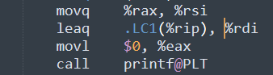
b.函数调用
还是用上图，通过call指令，控制转移到对应的函数的地址（可能是相对当前指令的地址，也可以是绝对地址），并将当前指令地址压入栈中，以供函数返回使用。而在被调用函数中，还有保存寄存器等操作。
c.函数返回return
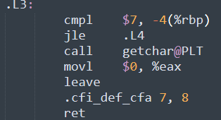
图4-汇编代码中main返回的片段
返回值放在寄存器%eax,%rax中。在栈中有返回地址，将控制转移到对应地址的指令。
对于这一过程也是十分有趣但又十分复杂，很多细节都没能做到展开，因为汇编语言了解的还不够多，编译原理又没好好学过。
编译还有个十分重要的地方：对于编译器来说，它在这一步对于程序的最终性能影响很大，编译器也有些很傻的时候，它十分谨慎，所以如果你写的代码不够严谨清楚，它会保持谨慎的态度，去做一些在你看起来效率十分低的事情。
这就与程序优化有关系了。
汇编语言代码翻译成对应的机器语言代码，生成可重定向的ELF目标文件
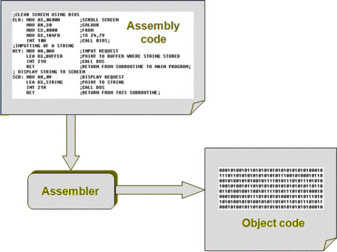
图5-汇编器Assembler
这一步也不是那么简单的对应的把汇编语言代码，都变成对应的机器可读的01指令，它还包括程序最终的结构
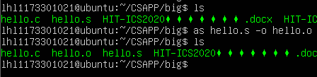
图6-汇编器命令
as汇编器，利用汇编代码，生成hello.o目标文件
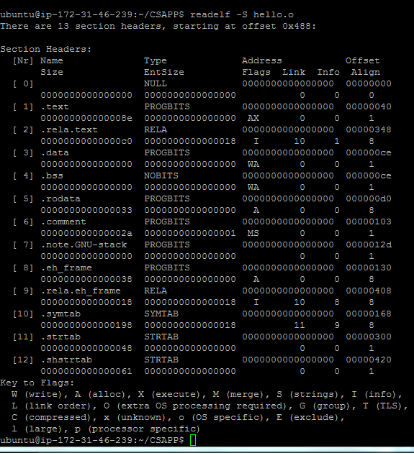
图7-ELF目标文件，各节的相关信息
4.3.1 .ELF文件头
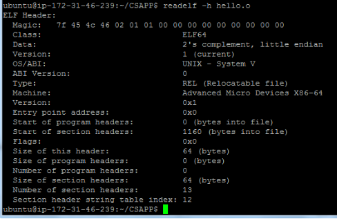
图8-ELF文件头
ELF头展示了hello.o的Magic number，还有文件类型，编译机器的大小端模式、操作系统、CPU架构，文件头的大小，节的数量，节头符号表的索引数量
4.3.2 .text节
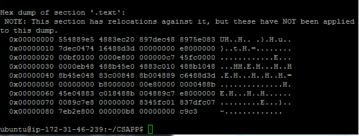
图9-.text节
汇编文件中的代码部分翻译成对应的01，CPU可识别的指令。
4.3.3 .rela.text节
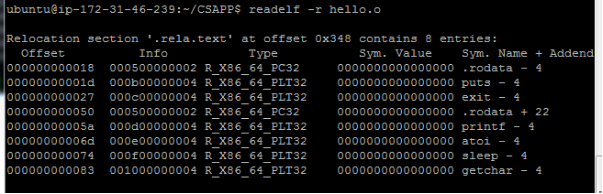
图10-.rela.text节
存着可重定位的条目，代码节中的部分内容还没重定向，利用重定位条目来处理，最终得到已重定位的可执行代码
4.3.4 .data节 .bss节
在这个ELF文件里是没有的，因为没有全局变量
4.3.6 .rodata节
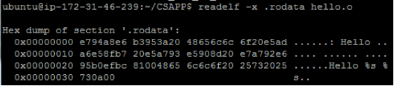
图11-.rodata节
存着字面量字符串内容和格式串，不可修改
4.3.7 .comment节
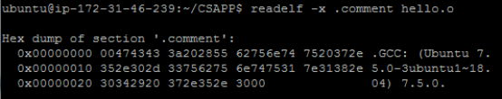
图12-.comment节
.comment节里是版本控制信息，诸如编译器版本和执行平台。
4.3.8 .note.GNU-stack节
这个节用于声明栈的属性，被使用的唯一属性是SHF_EXECINSTR，这意味着GNU链接器，链接目标文件需要可执行的栈。
4.3.9 .eh_frame节
eh_frame这个节里包含着异常处理期间的帧展开所需的空间rela.eh_frame节是它的重定向信息
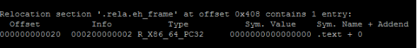
图13-.eh_frame节
4.3.11 .symtab节
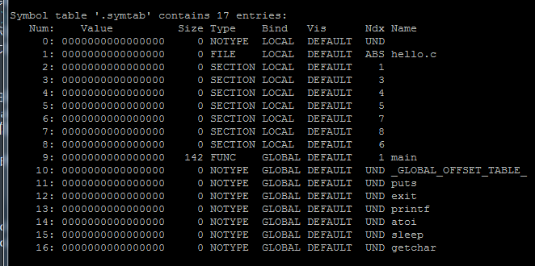
图14-.symtab节
符号表，强弱符号，类型，局部还是全局，伪节。
4.3.12 .strtab节
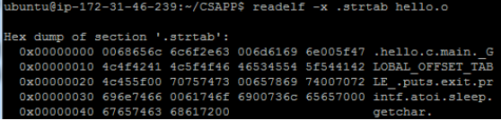
图15-.strtab节
用于符号表条目，从.strtab里索引找到对应的条目的名称。
4.3.13 .shstrtab节
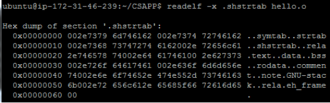
图16-.shstrtab节
存着节头名，方便查看。
说明机器语言的构成，与汇编语言的映射关系。特别是机器语言中的操作数与汇编语言不一致，特别是分支转移函数调用等。
objdump -d -r hello.o > hello.od，将反汇编的内容输出到hello.od。
对比hello.s和hello.od，
①汇编文件中对于立即数都基本采用十进制的表示，而反汇编文件里是16进制表示，这一点倒是没什么特别重要的，只是在分析的时候，记得注意。
②反汇编文件，我们看到的反汇编内容，不只是把目标文件的代码节逆向翻译成汇编指令，其实有利用到重定位条目和符号表去表示。
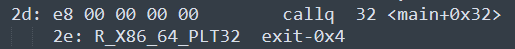
图17-汇编代码与反汇编代码关于call指令的差别
汇编语言中，这里只是call指令，对象是exit@PLT,在汇编器处理后，exit@PLT用于生成符号表和可重定位内容，而因为没有重定位，对应的机器代码 e8 00 00 00 00，后面的0是占位符，等到链接器重定位时，替换成对应地址。
可重定位的ELF目标文件，倒是比较好分析，做好学校的链接LAB就能理解透怎么重定位的，其实还是比较绕的，并且用到的工具readelf，也许看readelf显示的内容时会感到奇怪，就像readelf -s ./hello.o，看展示的内容，思考一下这些条目的各个名称，地址信息，大小，是怎么来的，这与目标文件的各节有关，可能利用到许多节。
链接，它将各种代码和数据片段收集并组合成为一个单一的文件的过程，这个文件可以被加载到内存并且执行。链接可以发生在多个时间节点，编译时，程序加载时，程序运行时。
至于作用呢？主要是服务于大型的应用程序，它使得分离编译成为可能。
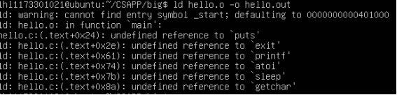
当你直接使用链接器，不链接上需要的文件时，会提示，这些函数是无定义的引用，因为这里链接器利用符号表去查找，在所有被链接的文件中，有没有关于这几个函数的定义，如果找到，就将引用处的占位的00 00 00 00，替换为函数地址。
因为知识不够。。这里还是使用gcc配置编译链接了
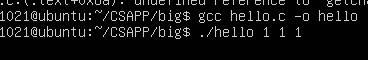
图19-gcc链接命令
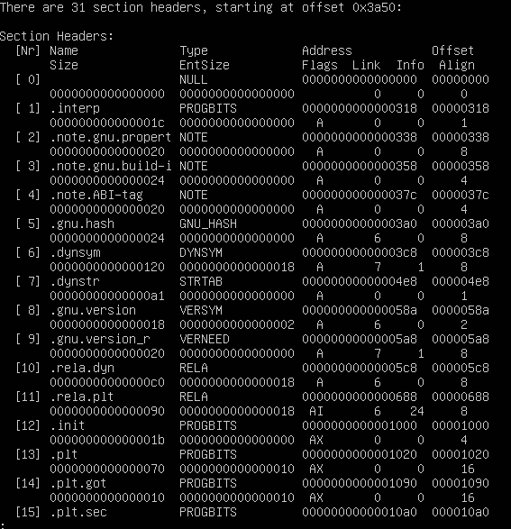
图20-可执行目标文件的节头信息1
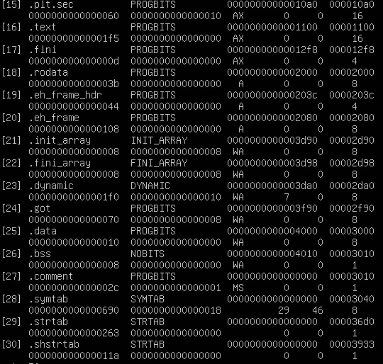
图21-可执行目标文件的节头信息2
大致各节如图，比可重定位ELF目标文件多了不少节，主要是动态共享库有关的
init节
使用edb加载hello，查看本进程的虚拟地址空间各段信息，并与5.3对照分析说明。
objdump -d -r hello 对可执行目标文件得到的反汇编文件，
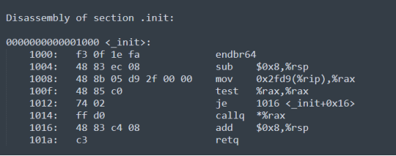
图22-反汇编可执行目标文件中的_init
有个很重要的是，这里链接后的_init节，是入口。
_start
__libc_start_main
__GI___cxa_atexit
__new_exitfn
__libc_csu_init
_init
Frame_dummy
Register_tm_clones
__set_jump
_sig_setjump
_sig_jmpsave
main
（以下格式自行编排，编辑时删除）
分析hello程序的动态链接项目，通过edb调试，分析在dl_init前后，这些项目的内容变化。要截图标识说明。
进程，就是一个运行中的程序的实例，不同于没有生命周期的程序，程序本身只是指令、数据及其组织形式的描述。
总的来说，一个计算机系统进程由以下几部分组成（或者说是进程拥有以下内容）：
1. 程序的可执行机器代码的一个在存储器的映像。
2. 内存（一般是指虚拟内存的一些区域），包含可执行的代码段，进程需要的数据（输入或输出），调用栈（为了跟踪活动的子例程或其他的一些事件），以及一个堆来存储在运行时生成的实时计算数据。
3. 操作系统对某些被分配给该进程的描述符，例如文件描述符（Unix），句柄（Windows），以及数据源和数据终端。
4. 安全性属性，例如进程拥有者及对进程的权限集（允许的操作）。
5. 进程状态（进程上下文），例如寄存器内容，物理内存地址。在进程执行时这个状态通常储存在计算机寄存器或者是内存里。
作用：
shell能实现，循环接受输入并解析，输出的重定向，多个进程间的管道，前台后台命令，内置命令，大致就这些。往深里还有shell脚本编程，正则表达式识别。
但不管怎么说，shell也是个程序，还是用户层级的进程。其基本功能是解释并执行用户打入的各种命令，实现用户与Linux核心的接口。它的执行过程基本上按如下步骤：
(1)读取用户由键盘输入的命令行。
(2)分析命令，以命令名作为文件名，并将其它参数改造为系统调用execve( )内部处理所要求的形式。
(3)终端进程调用fork( )建立一个子进程。
(4)终端进程本身用系统调用wait4( )来等待子进程完成（如果是后台命令，则不等待）。当子进程运行时调用execve( )，子进程根据文件名（即命令名）到目录中查找有关文件（这是命令解释程序构成的文件），将它调入内存，执行这个程序（解释这条命令）。
(5)如果命令末尾有&号（后台命令符号），则终端进程不用系统调用wait4( )等待，立即发提示符，让用户输入下一个命令，转⑴。如果命令末尾没有&号，则终端进程要一直等待，当子进程（即运行命令的进程）完成处理后终止，向父进程（终端进程）报告，此时终端进程醒来，在做必要的判别等工作后，终端进程发提示符，让用户输入新的命令，重复上述处理过程。
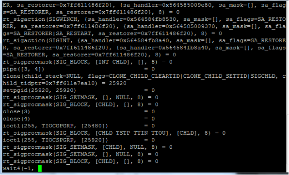
图23- 监视了shell运行hello新程序的系统调用
当在shell提示符后面输入./hello及需要的参数后，shell发现并不是内置命令，是前台命令，就在fork()创建出的子进程中直接调用execve()，而主进程调用wait()等待子进程结束后发送SIGCHILD信号后，主进程结束挂起，wait()返回，并清空子进程占用的虚拟内存空间，开始新的一轮。
在fork出来的子进程，调用execve。
ubuntu@ip-172-31-46-239:~/CSAPP$ strace ./hello 1173301021 lhl 5
execve("./hello", ["./hello", "1173301021", "lhl", "5"], 0x7ffedd080d98 /* 21 vars */) = 0
brk(NULL) = 0x11e8000
access("/etc/ld.so.nohwcap", F_OK) = -1 ENOENT (No such file or directory)
access("/etc/ld.so.preload", R_OK) = -1 ENOENT (No such file or directory)
openat(AT_FDCWD, "/etc/ld.so.cache", O_RDONLY|O_CLOEXEC) = 3
fstat(3, {st_mode=S_IFREG|0644, st_size=42542, ...}) = 0
mmap(NULL, 42542, PROT_READ, MAP_PRIVATE, 3, 0) = 0x7f9f9a09f000
close(3) = 0
access("/etc/ld.so.nohwcap", F_OK) = -1 ENOENT (No such file or directory)
openat(AT_FDCWD, "/lib/x86_64-linux-gnu/libc.so.6", O_RDONLY|O_CLOEXEC) = 3
read(3, "\177ELF\2\1\1\3\0\0\0\0\0\0\0\0\3\0>\0\1\0\0\0\260\34\2\0\0\0\0\0"..., 832) = 832
fstat(3, {st_mode=S_IFREG|0755, st_size=2030544, ...}) = 0
mmap(NULL, 8192, PROT_READ|PROT_WRITE, MAP_PRIVATE|MAP_ANONYMOUS, -1, 0) = 0x7f9f9a09d000
mmap(NULL, 4131552, PROT_READ|PROT_EXEC, MAP_PRIVATE|MAP_DENYWRITE, 3, 0) = 0x7f9f99a92000
mprotect(0x7f9f99c79000, 2097152, PROT_NONE) = 0
mmap(0x7f9f99e79000, 24576, PROT_READ|PROT_WRITE, MAP_PRIVATE|MAP_FIXED|MAP_DENYWRITE, 3, 0x1e7000) = 0x7f9f99e79000
mmap(0x7f9f99e7f000, 15072, PROT_READ|PROT_WRITE, MAP_PRIVATE|MAP_FIXED|MAP_ANONYMOUS, -1, 0) = 0x7f9f99e7f000
close(3) = 0
arch_prctl(ARCH_SET_FS, 0x7f9f9a09e4c0) = 0
mprotect(0x7f9f99e79000, 16384, PROT_READ) = 0
mprotect(0x600000, 4096, PROT_READ) = 0
mprotect(0x7f9f9a0aa000, 4096, PROT_READ) = 0
munmap(0x7f9f9a09f000, 42542) = 0
fstat(1, {st_mode=S_IFCHR|0620, st_rdev=makedev(136, 0), ...}) = 0
brk(NULL) = 0x11e8000
brk(0x1209000) = 0x1209000
write(1, "Hello 1173301021 lhl\n", 21Hello 1173301021 lhl
) = 21
nanosleep({tv_sec=5, tv_nsec=0}, 0x7ffdbd4a9530) = 0
fstat(0, {st_mode=S_IFCHR|0620, st_rdev=makedev(136, 0), ...}) = 0
read(0,
"\n", 1024) = 1
exit_group(0) = ?
+++ exited with 0 +++
回车
Ctrl-C
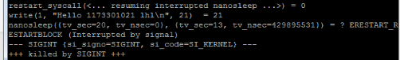
图24- Ctrl-C
--- SIGINT {si_signo=SIGINT, si_code=SI_KERNEL} ---
+++ killed by SIGINT +++
发送SIG，结束
Ctrl-z后可以运行ps jobs pstree fg kill
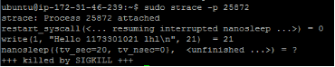
图24- kill -9 pid
程序运行的时候，kill -9 pid
Ctrl+w
会清空当前屏幕缓冲行，回退到上一行结尾
①逻辑地址：是程序员所能接触到的地址。
②线性地址：逻辑地址经过分段单元转换为线性地址
③虚拟地址：据考证，“virtual address就是linear address的别名，俩词汇是一个意思，内核代码和我们编程中喜欢用virtual address这个术语，而Intel手册里只用linear address这个术语。”[7]
④物理地址：出现CPU外部地址总线上的寻址物理内存的地址信号
在32位系统 Intel 平台下，逻辑地址(logical address)是 selector:offset 这种形式，selector 是 CS 寄存器的值，offset 是 EIP 寄存器的值。如果用 selector 去 GDT( 全局描述符表 ) 里拿到 segment base address(段基址) 然后加上 offset(段内偏移)，这就得到了 linear address。我们把这个过程称作段式内存管理。[7]
那么我们得到线性地址之后，如果再把 linear address 切成四段，用前三段分别作为索引去PGD、PMD、Page Table里查表，最终就会得到一个页表项(Page Table Entry)，那里面的值就是一页物理内存的起始地址，把它加上 linear address 切分之后第四段的内容(又叫页内偏移)就得到了最终的 physical address。我们把这个过程称作页式内存管理。[7]
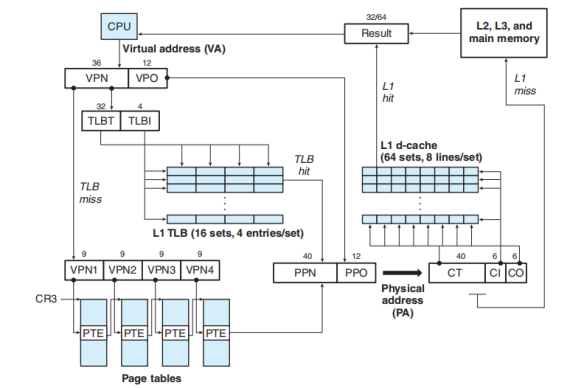
图25- i7 四级页表和TLB生成物理地址
虚拟地址先判断TLB中是不是最近缓存过VA对应的PA，也就是上图里，将VA的VPN部分，分成标记和索引部分去在TLB中看能不能命中，若命中，则直接得到了PPN，再结合VPO构成最终的物理地址PA。
假如TLB没命中呢，那就需要到页表中查找了，而这里的例子是利用四级页表，将VPN分为四部分，逐级去索引PTE，一旦在四级页表中都找到了对应的条目，则我们就得到了最终的PPN，结合VPO构成物理地址。
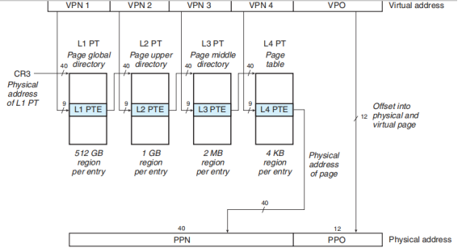
图26- 四级页表
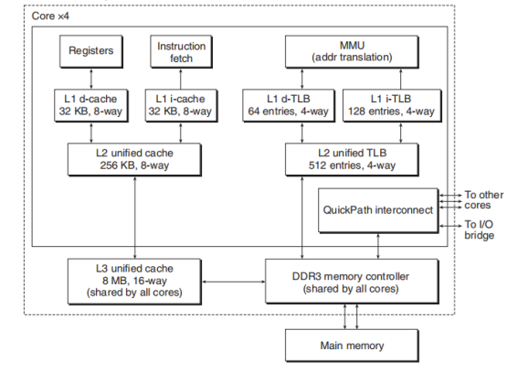
图27- 四级页表
利用物理地址，在三级缓存里访问地址对应的值，逐级访问，出现命中，则得到数据，若都没命中，就读取内存或者硬盘中的数据。
在bash中输入命令运行./hello程序时，bash调用fork函数创建子进程，内核为新进程创建各种数据结构，并分配唯一的PID，为了给这个新进程创建虚拟内存，它创建了当前进程的mm_struct，区域结构，和页表的原样副本，它将两个进程中的每个页面都标记为只读，并将两个进程中的每个区域结构都标记为私有的写时复制。
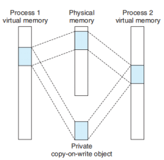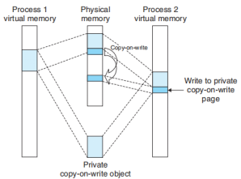
图28-写时复制技术
①删除已经存在的用户区域：删除当前进程的虚拟地址的用户部分已存在的区域结构。
②映射私有区域：为新程序的代码、数据、bss和栈区域创建新的区域结构，所有这些区域都是私有的写时复制的。代码和数据区域被映射为a.out文件中的.text和.data区。bss区域是请求二进制零的，映射到匿名文件，其大小包含在a.out，栈区域和堆区域也是请求二进制零的。
③映射共享区域：如果a.out程序与共享对象（或目标）链接，比如标准C库libc.so，那么这些对象都是动态链接到这个程序的，然后在映射到用户虚拟地址空间的共享区域中。
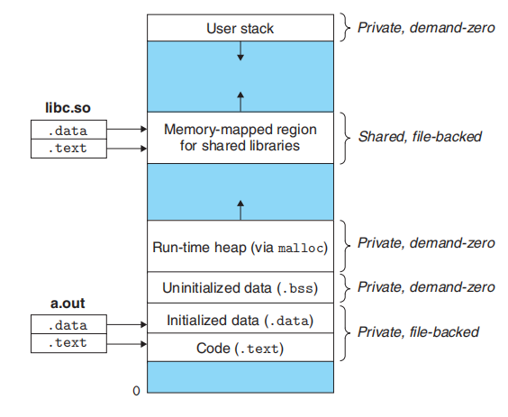
图29-私有写时复制的内存映射
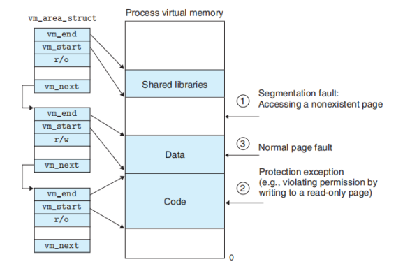
图30-缺页异常
这里主要谈一下如图的情况③，也就是正常的缺页故障。
1) 硬件陷入内核，在堆栈中保存程序计数器。大多数机器将当前指令的各种状态信息保存在特殊的CPU寄存器中。
2) 启动一个汇编代码例程保存通用寄存器和其他易失的信息，以免被操作系统破坏。这个例程将操作系统作为一个函数来调用。
3) 当操作系统发现一个缺页中断时，尝试发现需要哪个虚拟页面。通常一个硬件寄存器包含了这一信息，如果没有的话，操作系统必须检索程序计数器，取出这条指令，用软件分析这条指令，看看它在缺页中断时正在做什么。
4) 一旦知道了发生缺页中断的虚拟地址，操作系统检查这个地址是否有效，并检查存取与保护是否一致。如果不一致，向进程发出一个信号或杀掉该进程。如果地址有效且没有保护错误发生，系统则检查是否有空闲页框。如果没有空闲页框，执行页面置换算法寻找一个页面来淘汰。
5) 如果选择的页框“脏”了，安排该页写回磁盘，并发生一次上下文切换，挂起产生缺页中断的进程，让其他进程运行直至磁盘传输结束。无论如何，该页框被标记为忙，以免因为其他原因而被其他进程占用。
6) 一旦页框“干净”后（无论是立刻还是在写回磁盘后），操作系统查找所需页面在磁盘上的地址，通过磁盘操作将其装入。该页面被装入后，产生缺页中断的进程仍然被挂起，并且如果有其他可运行的用户进程，则选择另一个用户进程运行。
7) 当磁盘中断发生时，表明该页已经被装入，页表已经更新可以反映它的位置，页框也被标记为正常状态。
8) 恢复发生缺页中断指令以前的状态，程序计数器重新指向这条指令。
9) 调度引发缺页中断的进程，操作系统返回调用它的汇编语言例程。
10) 该例程恢复寄存器和其他状态信息
强烈推荐阅读 Dynamic Storage Allocation: A Survey and Critical Review[8],年代久是久了点，主要是够细。
虽然可以使用低级的mmap和munmap函数来创建和删除虚拟内存的区域，但是C程序员还是会觉得当运行时需要额外虚拟内存时，用动态内存分配器(dynamic memory allo-cator)更方便，也有更好的可移植性。
动态内存分配器维护着一个进程的虚拟内存区域，称为堆(heap)
)。系统之间细节不同，但是不失通用性，假设堆是一个请求二进制零的区域，它紧接在未初始化的数据区域后开始，并向上生长(向更高的地址)。对于每个进程，内核维护着一个变量brk(读做“break")，它指向堆的顶部。
分配器将堆视为一组不同大小的块(block)的集合来维护。每个块就是一个连续的虚拟内存片(chunk),要么是已分配的，要么是空闲的。已分配的块显式地保留为供应用程序使用。空闲块可用来分配。空闲块保持空闲，直到它显式地被应用所分配。一个已分配的块保持已分配状态，直到它被释放，这种释放要么是应用程序显式执行的，要么是内存分配器自身隐式执行的。
动手做一个动态内存分配器就完事了。
linux中一切皆文件，它将I/O设备也视为一个特殊的文件，如下就是一些实例：
① /dev/sda2 (/usr disk partition用户磁盘分区)
② /dev/tty2 (terminal终端)，
这种设备与文件的映射的处理方法，使得内核给用户提供了一种简单的接口——Unix I/O。
Linux提供的I/O接口分为两大类：
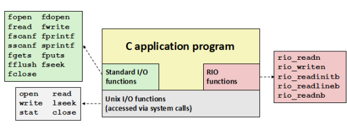
图31-Linux提供的I/O接口
① Unix I/O，与系统调用直接相关。
② C标准库I/O（15213这门课在其提供的csapp.c，csapp.h中编写了Robust I/O，是一种更具鲁棒性的I/O函数，相比于C标准I/O），关于标准库（libc.so），
可参阅 The C Programming Language K&R 附录B。
对于Unix I/O，包括的函数大致有：open(),read(),write(), lseek(),stat(), close().
功能覆盖有，文件的打开，读取字符，写字符，文件偏移量改变，查看文件元信息，关闭打开的文件。
想要分析这一问题，需要先找到我们在ubuntu 18中使用的GNU库的printf函数的源码，那么有个问题就是，相同GNU版本但不同系统（windows，linux）的printf有无区别呢？
在本人阅读了几篇对printf和系统调用的分析后，有了一定的思考，但还是强烈推荐去阅读[4][5]的原文,下面我将对从调用printf()到字符显示在显示器上这一过程进行分析，这一问题的分析与不同操作系统的实现有关，所以此处采用的是Linux GNU C库中对printf的实现。
在我们使用printf时，需要包括的头文件是<stdio.h>,在stdio.h可以发现，里面有一句printf的函数定义。
extern int printf (__const char *__restrict __format, ...);
实际上，在你的ubuntu里，你是找不到printf函数对应的源代码的，它的实现存在于libc.so这一个共享库中，这是打包的目标文件，但我们可以通过glibc源码网站阅读GNU C库源码，发现在 /libc/stdio-common/printf.c内，有的只是名为_printf()的函数源代码，同时，在printf.c中，还有一个宏定义，令printf是_printf的别名。
int __printf (const char *format, ...)
{
va_list arg;
int done;
va_start (arg, format);
done = vfprintf (stdout, format, arg);
va_end (arg);
return done;
}
可以看出，_printf()或者说printf()是vfprintf()的上层包装函数，格式化输出到标准输出应该发生在vfprintf()，而关于vfprintf()的解析是个大工程，我们这里不展开了，在一步步深入对格式处理还有各种函数包装，最终在_IO_new_file_write()中见证到对write()的系统调用（见代码标红位置）。
_IO_ssize_t
_IO_new_file_write (f, data, n)
_IO_FILE *f;
const void *data;
_IO_ssize_t n;
{
_IO_ssize_t to_do = n;
while (to_do > 0)
{
_IO_ssize_t count = (__builtin_expect (f->_flags2
& _IO_FLAGS2_NOTCANCEL, 0)
? write_not_cancel (f->_fileno, data, to_do)
: write (f->_fileno, data, to_do));
if (count < 0)
{
f->_flags |= _IO_ERR_SEEN;
break;
}
to_do -= count;
data = (void *) ((char *) data + count);
}
n -= to_do;
if (f->_offset >= 0)
f->_offset += n;
return n;
}
那么write()对应的C代码或者汇编代码在哪里能看到呢？
其实对于系统调用write(),在Linux GNU C库中也是找不到对应的write.c的，write（）是通过跳转表（不同于异常处理表）生成的，对应的汇编代码包含int $0x80,从而陷入内核态，进而运行相应的处理程序。
那么在这里的陷阱处理程序是什么呢？其实就是内核将内容写到文件去，假如输出到的是显示器，那么就是写到video memory (开始于 0xb8000)，对于屏幕上的每个cell，由两字节来表示，第一个字节来表示这个字符，第二个字节表示字符的属性，假如此时想要在屏幕上显示一个带颜色的空格，' '，示例如下。
0xb800:0x0000 : 0x20 ; ASCII字符 0x20 是 ' '
0xb800:0x0001 : 0x40 ; 红色背景，黑色字体
根据上面展示的0xb800内存处的内容，再由显示芯片按照刷新频率逐行读取vram，并通过信号线向液晶显示器传输每一个点（RGB分量），这里就与本门课程相关不大了，就不在细节展开。
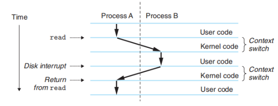
图32-read系统调用的处理
getchar的具体细节就不表述了，它最终调用了read()系统调用，使cpu陷入内核态，内核中的陷阱处理程序，请求来自键盘的输入，并且安排当键盘控制器完成从键盘到内存的数据传输后（即按下回车），键盘中断处理器。接下来，按下键盘的按键，键盘接受按键扫描码，转变成ascii码，保存到系统的键盘缓冲区。
多读源码，GNU C库源码去sourceware.org去找，看不懂汇编了，可以学习学习李忠的X86汇编语言 从实模式到保护模式，还有，具体问题具体分析，write(),read(),其实也不是系统调用，也是个封装。
通过阐述分析给定的hello.c的整个生命周期，探究从生命周期的初期---源代码，到显示在屏幕上整个阶段，这是硬软件的共同努力，作为软件，操作系统也有参与进去。内容主要涉及编译，内存管理，进程，I/O。作为计算机系统这门课的概括性总结。
我写作的这篇报告重点内容在于最后的I/O,还有编译的整个阶段，其他内容实在是需要投入大量的时间才能用自己的语言去做到精炼的概括。
工具的使用很重要，搜索也十分关键，涉及的很多内容国内网站上内容质量都很烂，甚至完全在复述别人的错误观点，不如翻墙去多看看，多读读源码，虽然现在版本的linux源码过于难搞，可以学学xv6，mit6.828这门课。
学了一门课看了一本书，做了一堆LAB，写个报告感觉自己什么都没学深入，书本上的都能掌握，但是硬件和汇编代码功底太烂，在链接器和汇编器这里暴露的十分严重，还需要继续的阅读学习，以及x86这个稍微落伍的架构了解的还是太不足，还有就是实模式和保护模式。
hello.c :C source code that must be preprocessed.
hello.i: C source code that should not be preprocessed.
hello.s: Assembler code.
hello: An object file to be fed straight into linking. Any file name with no recognized suffix is treated this way.
hello.out:已重定向的可执行ELF文件
[1] K&R. The C Programming Language Appendix A.12
[2] C preprocessor Wikipedia https://en.wikipedia.org/wiki/C_preprocessor
[3] Linux Standard Base PDA Specification 3.0RC1 Chapter 5. Special Sections
https://refspecs.linuxbase.org/LSB_3.0.0/LSB-PDA/LSB-PDA/specialsections.html
[4] Where the printf() Rubber Meets the Road
http://blog.hostilefork.com/where-printf-rubber-meets-road/
[5] 系统调用、接口与system_call
https://www.cnblogs.com/20135124freedom/p/5299094.html
[7] Linux 线性地址，逻辑地址和虚拟地址的关系？
https://www.zhihu.com/question/29918252
[8] Dynamic Storage Allocation: A Survey and Critical Review？
https://users.cs.northwestern.edu/~pdinda/icsclass/doc/dsa.pdf